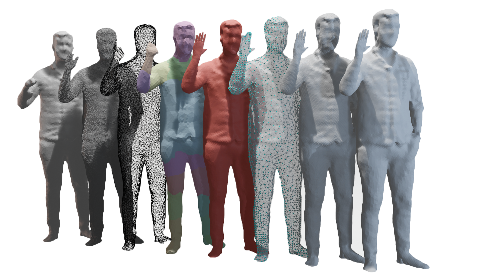

Matthew Moynihan1 Susana Ruano1 Rafael Pagés2 Aljosa Smolic1
Trinity College Dublin1 Volograms2
As a rapidly growing medium, volumetric video is gaining attention beyond academia, reaching industry and creative communities alike. This brings new challenges to reduce the barrier to entry from a technical and economical point of view. We present a system for robustly and autonomously performing temporally coherent tracking for volumetric sequences, specifically targeting those from sparse setups or with noisy output. Our system will detect and recover missing pertinent geometry across highly incoherent sequences as well as provide users the option of propagating drastic topology edits. In this way, affordable multi-view setups can leverage temporal consistency to reduce processing and compression overheads while also generating more aesthetically pleasing volumetric sequences.
@InProceedings{Moynihan_2021_WACV,
author = {Moynihan, Matthew and Ruano, Susana and Pages, Rafael and Smolic, Aljosa},
title = {Autonomous Tracking for Volumetric Video Sequences},
booktitle = {Proceedings of the IEEE/CVF Winter Conference on Applications of Computer Vision (WACV)},
month = {January},
year = {2021},
pages = {1660-1669}
}
Figure 9 (a)-(d) is missing the following reference to the source of the mesh used.
@inproceedings{casas20144d,
title={4d video textures for interactive character appearance},
author={Casas, Dan and Volino, Marco and Collomosse, John and Hilton, Adrian},
booktitle={Computer Graphics Forum},
volume={33},
number={2},
pages={371--380},
year={2014},
organization={Wiley Online Library}
}